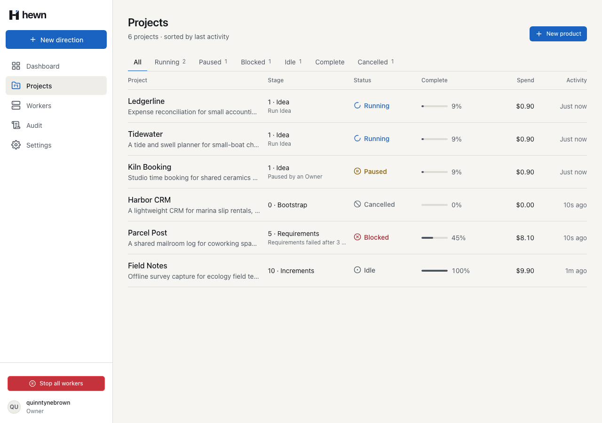
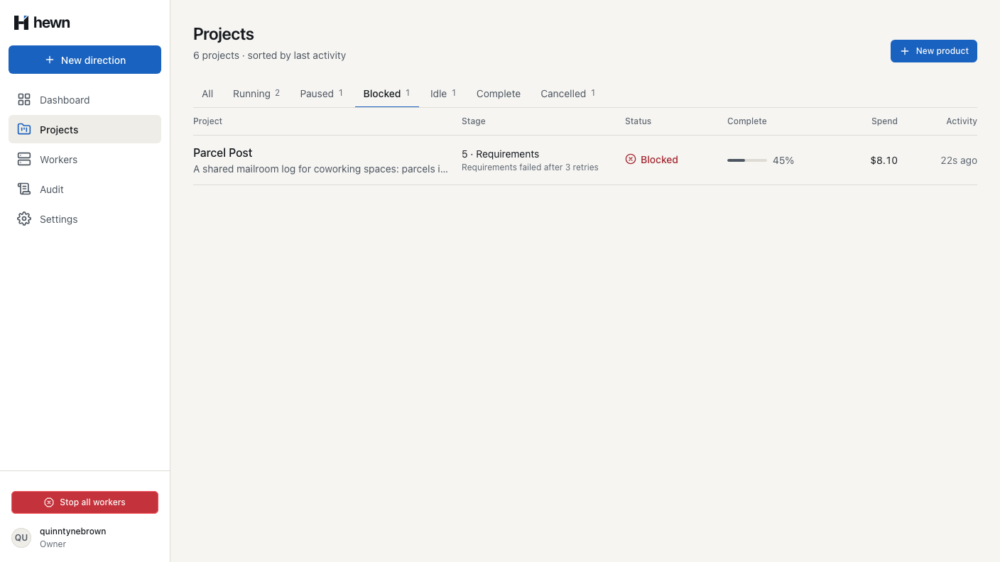
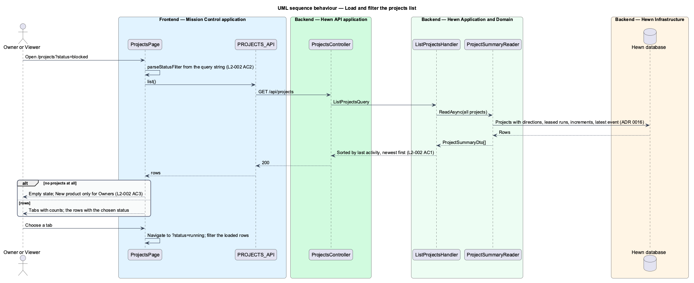
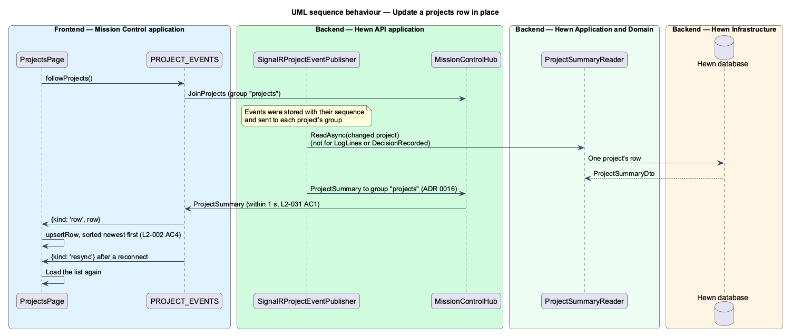
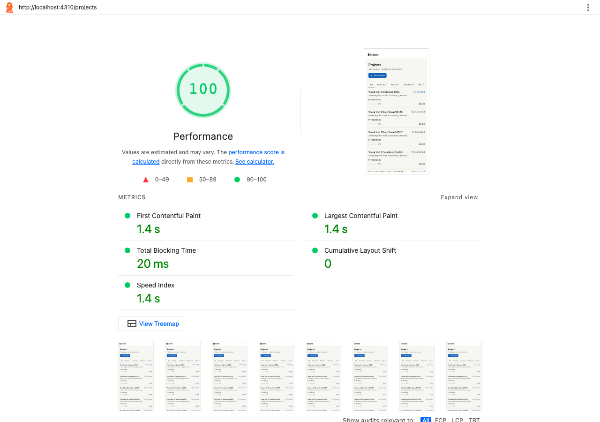
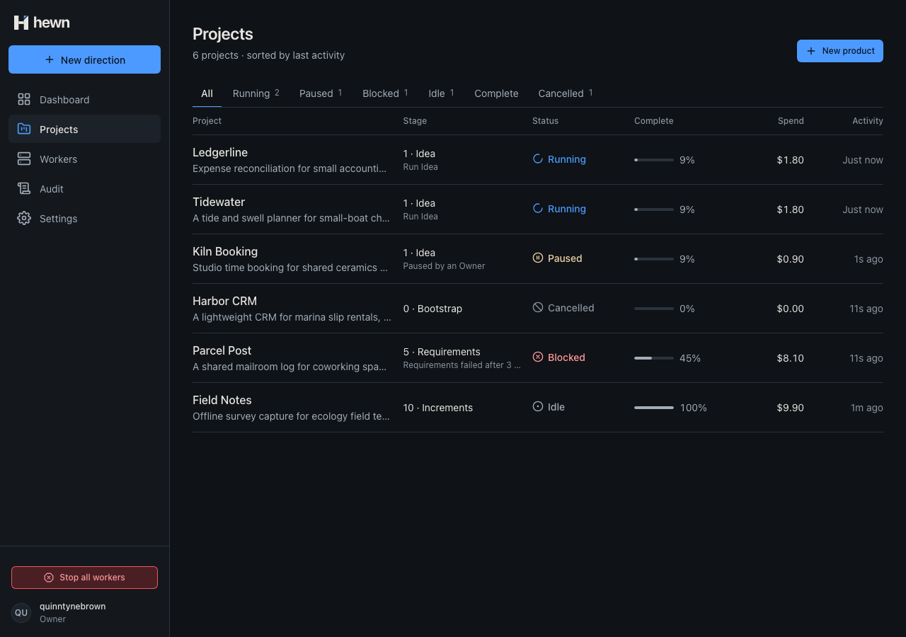
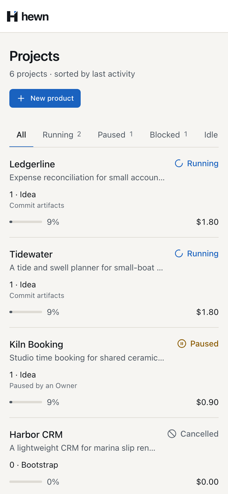
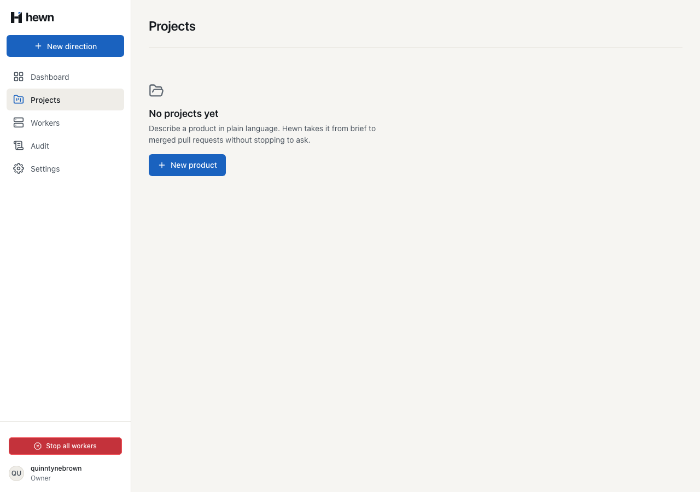
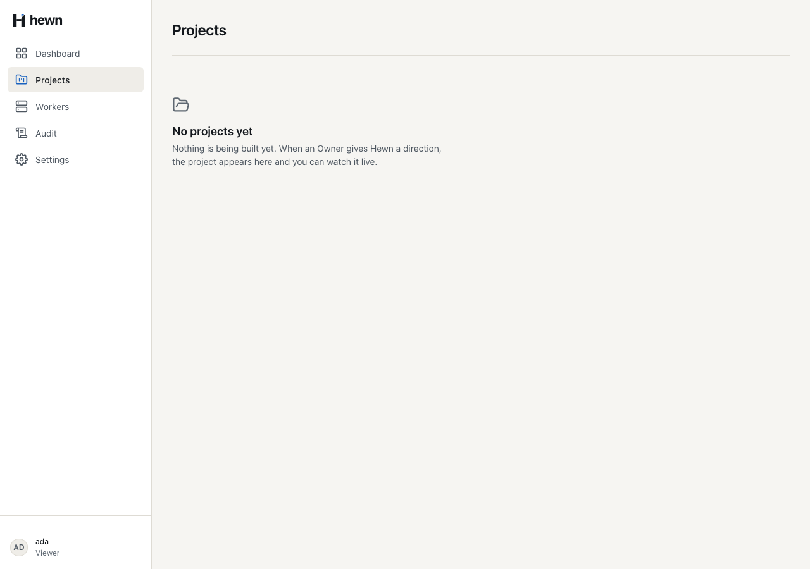

Every project on one page: what it is doing, how far along, what it has cost.


?status=
// The active direction, else the latest one: the one the row describes.
var direction = project.ActiveDirection ?? project.Directions.OrderByDescending(d => d.SubmittedAt).First();
var planned = direction.Stages.Where(s => s.Status != StageStatus.Skipped).OrderBy(s => s.Number).ToList();
var stage = planned.FirstOrDefault(s => s.Status != StageStatus.Succeeded) ?? planned[^1];
var (merged, total) = increments.GetValueOrDefault(direction.Id);
var done = (double)planned.Count(s => s.Status == StageStatus.Succeeded);
if (stage.Number == Stages.Count - 1 && stage.Status != StageStatus.Succeeded && total > 0)
{
done += (double)merged / total;
}
var percent = direction.Status == DirectionStatus.Complete ? 100 : (int)Math.Floor(100 * done / planned.Count);
public sealed class ListProjectsHandler(ProjectSummaryReader reader) : IRequestHandler<ListProjectsQuery, IReadOnlyList<ProjectSummaryDto>>
{
public async Task<IReadOnlyList<ProjectSummaryDto>> Handle(ListProjectsQuery query, CancellationToken cancellationToken) =>
(await reader.ReadAsync(null, cancellationToken))
.OrderByDescending(p => p.LastActivityAt)
.ThenBy(p => p.Name, StringComparer.OrdinalIgnoreCase)
.ToList();
}
// The Projects page gets each changed project's row, read after the events were stored (L2-002 AC4, ADR 0016).
var changed = events.Where(e => !RowNeutral.Contains(e.Type)).Select(e => e.ProjectId).Distinct().ToList();
if (changed.Count == 0)
{
return;
}
await using var scope = scopes.CreateAsyncScope();
var reader = scope.ServiceProvider.GetRequiredService<ProjectSummaryReader>();
foreach (var projectId in changed)
{
foreach (var row in await reader.ReadAsync(projectId, cancellationToken))
{
await hub.Clients.Group(MissionControlHub.ProjectsGroup).SendAsync("ProjectSummary", row, cancellationToken);
}
}

/** Applies a live row: replaces the project's row, or adds a project not seen yet (L2-002 AC4). */
export function upsertRow(rows: readonly ProjectSummary[], row: ProjectSummary): ProjectSummary[] {
return byActivity([...rows.filter((r) => r.id !== row.id), row]);
}
/** The status in `?status=`, or null for All; anything else is ignored. */
export function parseStatusFilter(value: string | null): ProjectStatus | null {
return STATUS_FILTERS.find((s) => s.toLowerCase() === value?.toLowerCase()) ?? null;
}
constructor() {
const tick = setInterval(() => this.now.set(new Date()), 1_000);
const updates = this.live.followProjects().subscribe({
next: (update) => {
if (update.kind === 'resync') this.load();
else if (this.all()) this.all.update((rows) => upsertRow(rows ?? [], update.row));
},
// The list still works without live rows; a reload brings them back.
error: () => undefined,
const result = await lighthouse(`http://localhost:${port}/projects`, {
port: debuggingPort,
output: ['json', 'html'],
logLevel: 'error',
onlyCategories: ['performance'],
disableStorageReset: true,
expect(lhr.configSettings.formFactor).toBe('mobile');
expect(lcpMs, 'Largest Contentful Paint (ms)').toBeLessThanOrEqual(2_500);
expect(js.gzipBytes, 'initial JavaScript, gzipped (bytes)').toBeLessThanOrEqual(500 * 1_000);
/** Loads the user and the public config together, so start-up waits for one round trip, not two (L2-045 AC1). */
async load(): Promise<void> {
const [me, config] = await Promise.allSettled([
firstValueFrom(this.api.me()),
firstValueFrom(this.api.config()),
]);
this.me.set(me.status === 'fulfilled' ? me.value : null);
if (me.status === 'fulfilled' && config.status === 'fulfilled') this.config.set(config.value);
NG_BUILD_OPTIMIZE_CHUNKS=1 · one initial file instead of eleven provideAppInitializer(() => {
// Opening on Projects, its list is requested alongside the session, not after it (L2-045 AC1).
if (location.pathname === '/projects') inject(ProjectsPrefetch).start();
return inject(SessionStore).load();
}),
start(): void {
this.pending = this.api.listProjects().pipe(shareReplay(1));
// Started now; a failure surfaces when the page takes it.
this.pending.subscribe({ error: () => undefined });
}
list(): Observable<ProjectSummary[]> {
const pending = this.pending ?? this.api.listProjects();
this.pending = null;
return pending;
}

await Promise.all(
Array.from({ length: concurrency }, async () => {
while (next < requests) {
const which = next++ % endpoints.length;
const path = endpoints[which]!();
const at = performance.now();
const response = await page.request.get(`${api}${path}`);
const ms = performance.now() - at;
expect(response.status(), path).toBe(200);
const key = path.replace(/[0-9a-f-]{36}/, '{id}');
samples.set(key, [...(samples.get(key) ?? []), ms]);
}
// Stages 0 to 2 succeed: 3 of 11.
for (var i = 0; i < 3; i++)
{
var run = await worker.LeaseAsync();
(await worker.SucceedAsync(run!)).EnsureSuccessStatusCode();
}
var row = Row(await ListAsync(owner), "Ledgerline");
Assert.Equal(27, row.GetProperty("percentComplete").GetInt32());
Assert.Equal(3, row.GetProperty("stage").GetProperty("number").GetInt32());
Assert.Equal("Design system", row.GetProperty("stage").GetProperty("name").GetString());
4 new, real API and hub
7 new frontend
+ 2 performance tests
// Scripted stages of three 1-second steps, so each stage shows for about 3 seconds.
stopWorkers = startWorkers(1, 1_000, { executor: 'scripted', logLines: 1 });
await expect(row.stage).toHaveText('3 · Design system', { timeout: 60_000 });
await expect(row.percent).toHaveText('27%');
// Once the API reports the direction finished, the row says Idle at 100% within a second.
await expect
.poll(
async () =>
((await (await page.request.get(`/api/projects/${projectId}`)).json()) as { status: string }).status,
{ timeout: 120_000 },
)
.toBe('Idle');
await expect(row.status).toHaveText('Idle', { timeout: 1_000 });
await expect(row.percent).toHaveText('100%', { timeout: 1_000 });
await expect(row.stage).toHaveText('10 · Increments');



